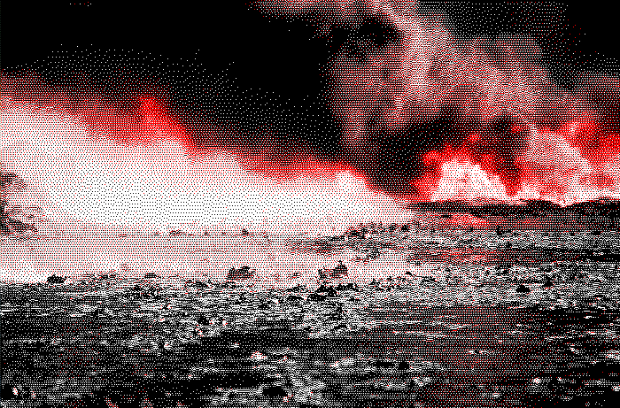

Climate change

Global changes in average temperature, from equator to poles, means a change in the Earth's climate. The climate is never static but what makes climate change a predicament is the speed at which it is currently happening, threatening the stability of the Earth's climate system and thereby our survival. Put simply, human activities such as burning fossil fuels, deforestation, agricultural practices, and industrial practices add greenhouse gases which trap heat in the lower atmosphere. This leads to global warming and rapid climate change. The global nature of climate change means it contributes to and potentially creates several related predicaments. This is the main reason why climate change specifically is a main focus in the discussion of our continued survival. It is, however, not certain that lowering the global temperature by any means necessary will lead to the desired effects.
In some ways the predicament of climate change has been defined too narrowly, potentially leading to an illusion of understanding its complexity and thereby trusting that a solution is within our grasp as soon as we choose to grab it. This is one reason for why such a "simple" problem hasn't been prioritised at the cost of growth. Every predicament is interrelated but the increase in trapped energy on Earth might end up affecting all of them.
Men argue. Nature acts.
Voltaire
Connections:
- Access to water - The global warming from climate change results in potable water being more difficult for people to access.
- Agriculture - Farmers have always relied on the benevolence of the weather gods for their agricultural fortune. Their unfortune now lies in climate change's angering of these gods.
- Apathy - When it is difficult to muster the energy to care for myself, how can I even begin to care about something as big as the climate of an entire planet? Global warming? Last winter felt pretty cold to me... The massive planetary scale of some predicaments require from us an ability to see through our apathetic tendencies.
- Biodiversity loss - The climate is always changing but the speed and magnitude of recent and current changes is not on an evolutionary timescale. No time to adapt means death.
- Carbon fundamentalism - Climate change seems to us to be caused by an excess of CO2 emissions. Reduce CO2 emissions and we've solved climate change. Right?
- Catastrophic risks - Climate change is a catastrophic risk and it is also, most unfortunately, through it being an increase in the energy trapped in the atmosphere, feeding into every other catastrophic risk we face. If we go extinct, it's gonna be hot.
- Climate footprints - Hang on a minute... If people truly cared about the climate they should be the ones who do something about it! Best regards /The oil industry
- Democracy failing - What do you think happens when the AC gets shut off in a room full of politicians?
- Desertification - When global temperatures rise it definitely appears to be a bull market for camels.
- Despair - How can we even begin to affect something as large as climate change?
- Ecological crisis - Climate change is a threat to the entire planet and to everything on it. It is a threat to the only home we have.
- Energy - Climate change and global warming is an increase in the energy trapped in our atmosphere. It is, however, more or less useless energy in the form of heat.
- Extreme weather - Climate change makes everything more volatile and unstable. There will be simultaneous floods and droughts, hurricanes and deafening silence, extremes becoming more extreme.
- Greenwashing - If our customers care about climate change and we appear to care as well... That's genius, Zachary!
- Hemispherical asymmetry (Earth) - It is difficult for the global North (or West) to care about climate change, something that mainly seems to make life more difficult for dark-skinned people somewhere else. Climate change further increases the asymmetry of the view most of modernity has of the planet.
- Immoral justifications - How does one justify the fact that one's actions and decisions, naively seen as harmless, push us ever closer towards the brink?
- Lack of agency - I'm just one person... There can't possibly be anything I can do about climate change? I'm no magician.
- Lack of faith in anything - There is nothing we can do, there is no future, nothing will save us.
- Lack of purpose - When climate change narrows the future it becomes near impossible to imagine one's life to have any purpose.
- Lack of time - We don't have the time we need to tackle this challenge. However, when we did, we still didn't. Rest assured, the time needed is not duration, eternity lies in the present.
- Loss of insect biomass - There will be no bugs on the windscreen of the vehicle of modernity as it accelerates towards the edge of destruction.
- Mass climate migration - As the planet warms, people will move to the places that better support human life.
- Mental health - Climate anxiety is real and, further, we will never truly understand the depth of the effects climate change has had, can have, and will have on the minds and hearts of people.
- Mistreatment of animals - Not sure what to say here. I think extinction could be seen as a form of mistreatment, I guess. Sounds a bit mild.
- Mistreatment of other humans - That's just it. Other humans. Not us, surely?
- Moloch - Moloch grins as the birdless sky hisses.
- Pandemics - "Climate change is exacerbating this problem by helping circulate disease between species that previously did not encounter each other. The study forecast the geographic range shifts of 3,139 mammal species due to climatic and land use changes until 2070 and found that even under a relatively low level of global heating there will be at least 15,000 cross-species transmission events of one or more viruses during this time."
- Resource conflicts - Climate change affects where and how resources can be accessed, for example in places that used to be covered in ice, leading to different entities fighting over rights to particular resources.
- Soil erosion - Generally, when it gets warmer it gets drier, when it gets drier we see an increase in soil erosion.
- Spiritual metacrisis - What happens to other realms and dimensions, being and existing, spirits and gods, when the climate changes?
- Suicide - "We project that unmitigated climate change (RCP8.5) could result in a combined 9–40 thousand additional suicides (95% confidence interval) across the United States and Mexico by 2050, representing a change in suicide rates comparable to the estimated impact of economic recessions, suicide prevention programmes or gun restriction laws."
- The desacration of all places - Anthropogenic climate change means the potential desacration of everything alive. And everything is alive.
- Tipping points - Add energy to any reaction and it might reach a tipping point where it rapidly changes. Not only are there tipping points within climate change, global warming further increases the risk of us reaching other systemic tipping points.